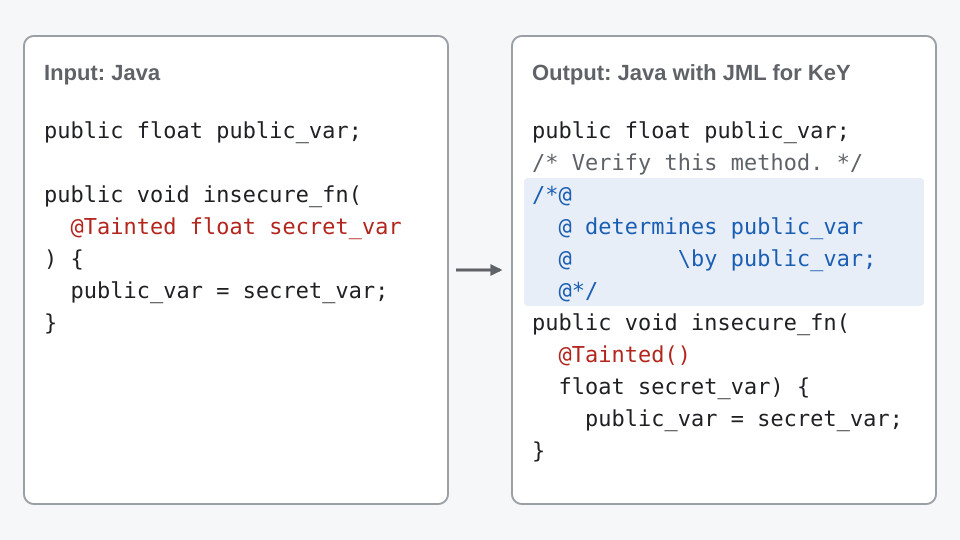

Type system meets theorem prover

What the translation layer writes for a method that the type checker rejects: the same Java with a JML contract for KeY and a note on which method to verify.
- Title
- A Translation Layer for Information Flow Verification Systems: Bridging Type Systems with Theorem Provers
- Where
- KIT, Institute of Information Security and Dependability (KASTEL)
- Supervision
- Prof. Dr. Bernhard Beckert (advisor: Florian Lanzinger)
- Links
- thesis PDFcode
Problem
Information-flow control proves that secret data can't reach public outputs, or that untrusted input can't change trusted data. A flow can be explicit, an assignment, or implicit, through control flow:
@Tainted int secret;
@Safe int visible = 1;
if (secret == 0) {
visible = 0;
}No secret value is assigned to visible, but afterwards it tells whether secret is 0.
Type systems such as SFlow check annotations like these automatically, but they are conservative and reject some programs that leak nothing. SFlow also left out implicit flows, like most practical type systems, because the rules that forbid them are very restrictive. The theorem prover KeY proves the absence of flows precisely, but it needs a JML contract for every method and can need help from the user during a proof.
Approach
The thesis combines the two, method by method. The type checker runs first and infers the missing types. Only the methods it rejects go to KeY. A similar combination existed for dependence graphs and KeY, not yet for a type system.
- Implicit flows: I extended SFlow with typing rules for conditionals, loops and the statements that change control flow (
break,continue,return,throw). - Method types: two new annotations,
@SafeMethodand@TaintedMethod, say whether a method may write safe variables. A call inside a branch on a secret is checked against the called method's type, not its body. An overriding method must be at least as strict as the one it overrides, so dynamic dispatch can't open a flow. - Translation layer: the checker writes the program back out as Java with JML contracts. Every method gets a
determinesclause (its safe outputs depend only on its safe inputs), methods typed tainted get anassignableclause that lists the only variables they may write, and each rejected method is marked as a proof obligation for KeY. - Soundness proof: I showed that the type system's notion of noninterference (Volpano and Smith) and KeY's are equivalent for the two security levels safe and tainted. From this I proved that the type system, extended with a rule that accepts a KeY proof for a method, is still sound.
Result
test cases, written test-first, for all typing rules and common Java constructs
If the extended SFlow can type every method of a program, the program is free of insecure flows, implicit ones included. Where it is too strict, KeY takes over. This example from the thesis is rejected by the type checker but leaks nothing:
@SafeMethod
public void noImplicitFlow() {
try {
if (logDeletion) { // @Tainted
safeValue = safeValue * 100;
}
} finally {
safeValue = 0;
}
}The safe field changes in a branch on a tainted condition, but the finally block resets it. KeY proves that.
- Most test cases needed few type annotations and little interaction with KeY.
- Where a real leak exists, the combined system still points to the code that causes it, even when the KeY proof stays incomplete.
- Not done: a more extensive case study of effectiveness and annotation overhead, which the thesis leaves as future work.
My role
A solo bachelor's thesis: I did the proofs, the implementation, the tests and the writing. The code builds on SFlow by Huang, Dong and Milanova. My 46 commits from July and August 2023 are in inference-framework/checker-framework/checkers/ of the fork.